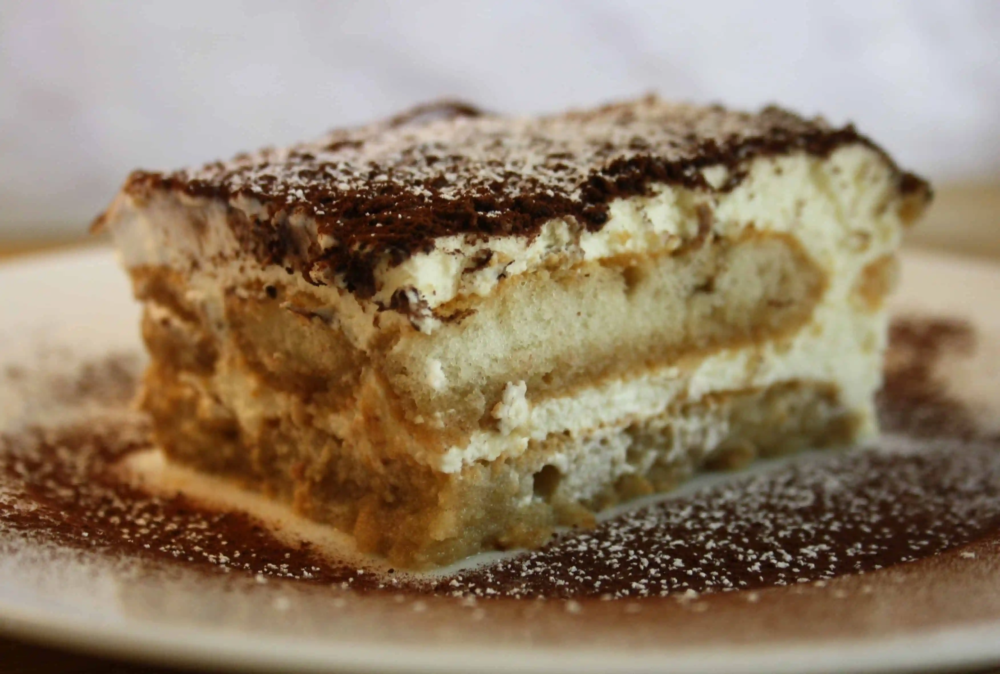

Tiramisu

Description
A rich, creamy dessert mingling the dark, fruity flavors of coffee and the luscious sweetness of mascarpone.
Ingredients
- Egg yolks.
- Cane sugar (medium-brown preferred, e.g. demerara or turbinado).
- Mascarpone cheese.
- Ristretto cooled down.
- Dark rum or marsala wine.
- Several ladyfingers.
- A chocolate bar or cocoa powder.
Steps
- Beat egg yolks and sugar together.
- Add mascarpone and ristretto, mixing until combined.
- Mix more ristretto with rum or marsala in a separate shallow dish.
- Dip each ladyfinger into the mixture, reserving one layer in a baking dish.
- Spread the mascarpone mixture over this first layer.
- Create a second layer using the same procedure.
- Top up with remaining mascarpone mixture.
- Cover with seran wrap and refrigerate.
- Garnish with shaved chocolate or dust with cocoa powder.
- Serve.